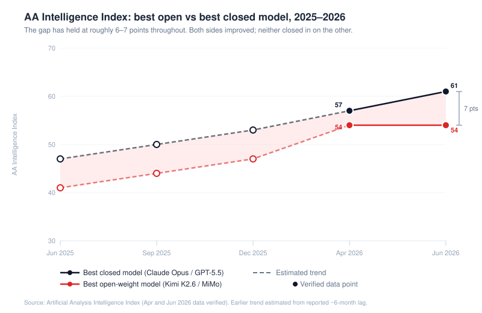
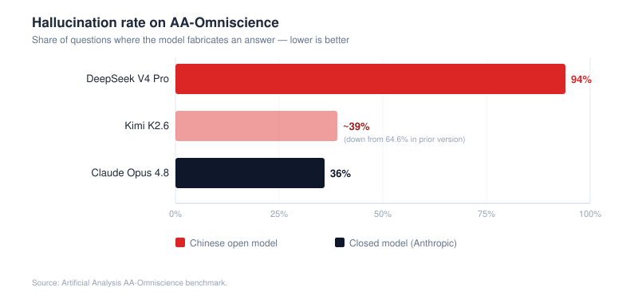
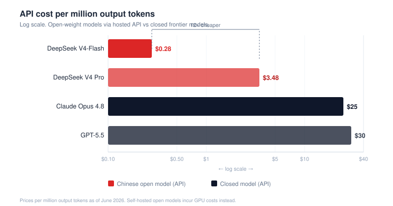
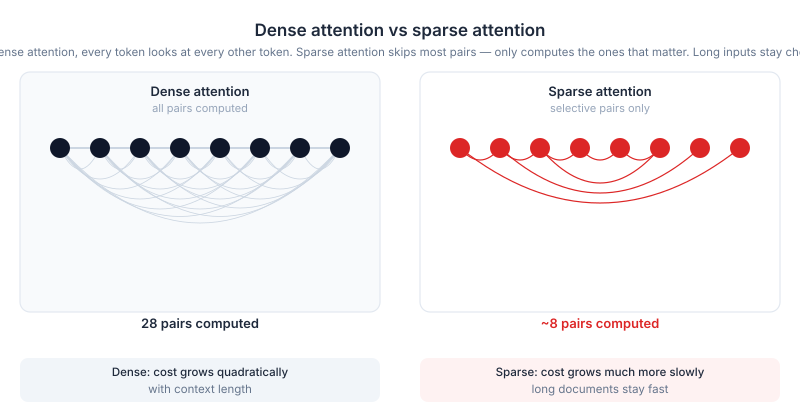
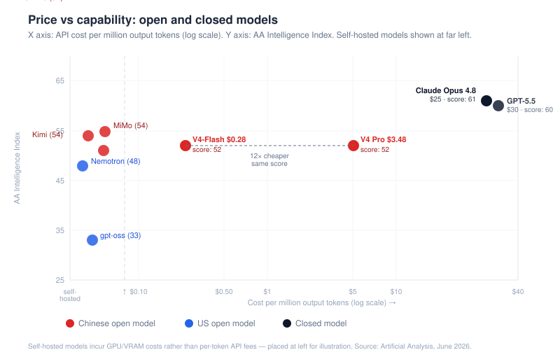
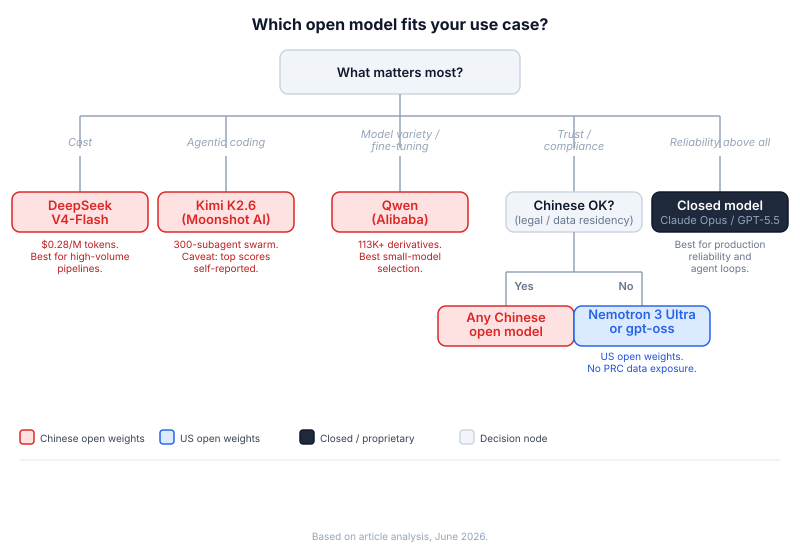
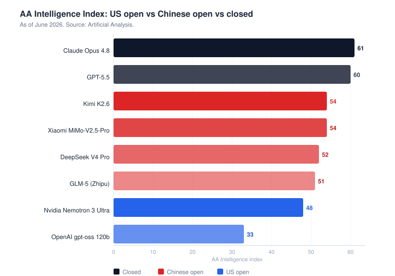
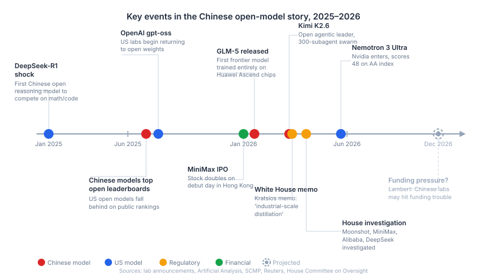

All 10 custom diagrams. SVGs scale to container width.



| Lab | Model | Released | Parameters | License | AA Score | Known for |
|---|---|---|---|---|---|---|
| DeepSeek | V4 Pro | Apr 2026 | 1.6T total (MoE) | MIT | 52 | Cheapest API — $3.48 / $0.28 Flash |
| Moonshot | Kimi K2.6 | Apr 20, 2026 | 1T / 32B active (MoE) | Mod. MIT | 54 | Agentic coding, 300-subagent swarm |
| Alibaba | Qwen3.7 | 2026 | Various (dense + MoE) | Mixed (Max closed) | — | Widest ecosystem, 113K+ derivatives |
| Zhipu | GLM-5 | Feb 11, 2026 | 744B / 40B active (MoE) | — | 51 | Trained on Ascend end-to-end |
| Xiaomi | MiMo-V2.5-Pro | 2026 | — | — | 54 | Tied for open leader |
| MiniMax | M3 | 2026 | — | — | unverified* | HK IPO Jan 2026, stock doubled day one |
AA Score = Artificial Analysis Intelligence Index as of June 2026. *MiniMax M3 score is self-reported; independent verification pending.

| Training new models | Running finished models | |
|---|---|---|
| Status | Still Nvidia-dependent | Ascend making progress |
| Key hardware | Nvidia Blackwell GPUs (required) | Huawei Ascend chips |
| Evidence | US officials say V4 was trained on smuggled Blackwell chips | GLM-5: first frontier model trained start-to-finish on domestic silicon |
| DeepSeek V4 | Admits it can't serve V4-Pro at scale — not enough hardware | 73% inference compute reduction on Ascend (claimed) |



